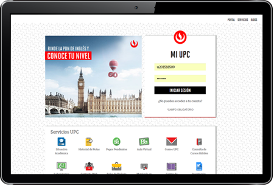
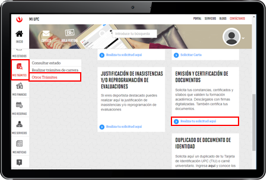
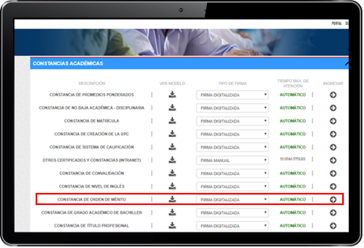
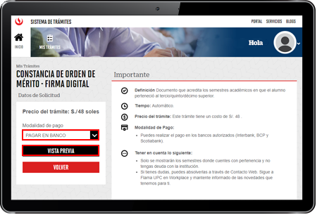
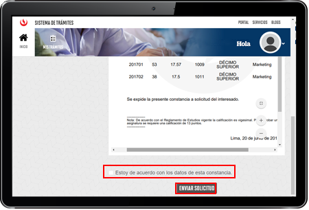
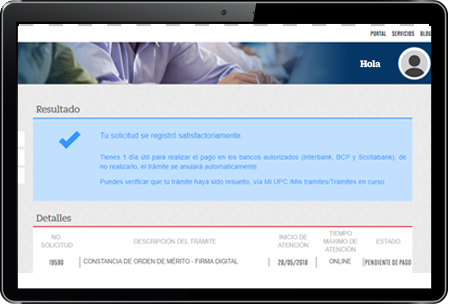
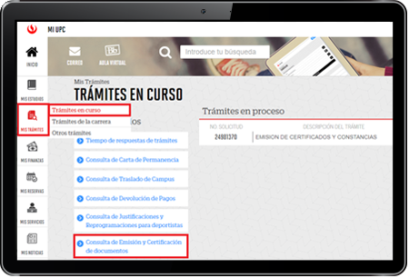
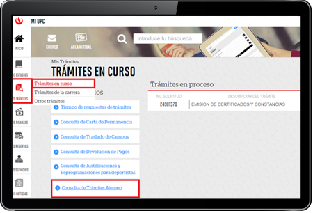
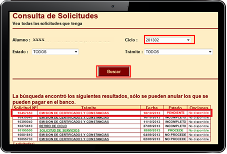

Si por algún motivo necesitas solicitar algún certificado o constancia que sea emitido por UPC, estos son los pasos que debes seguir:
* Previamente, verifica los requisitos que debes cumplir para solicitar la emisión de un documento:
No debes tener deudas pendientes del ciclo académico previo o ciclos anteriores
Debes tener registrada por lo menos una matrícula
Registro del trámite



Firma Digitalizada:


Recuerda que:
Luego de haber generado la solicitud y realizado el pago correspondiente en los bancos autorizados, podrás descargar tu documento con firmas digitalizadas.

Firma Manual:
Seguimiento
Una vez realizado el trámite y efectuado el pago, debes validar que éste se encuentre correctamente ingresado. Tienes dos opciones, debes seguir los siguientes pasos:


En la lista que se mostrará, deberá aparecer el trámite de Emisión de Certificado y Constancias con estado “Pendiente” (en caso no se haya seleccionado Pago en Banco , aparecerá como “Pagar en Banco” ) y una vez realizado el pago, cambiará a estado “Pendiente”.

¡No olvides validar tu solicitud!
RECUERDA
Puedes solicitar estas constancias con firma digital o manual y obtener una vista previa de tu documento.
- Certificado de Estudios (solo se emite en español)
- Constancia de Promedios Ponderados
- Constancia de No Baja Disciplinaria
- Constancia de Matrícula
- Constancia de Creación de la UPC
- Constancia de Sistema de Calificación
- Constancia de Convalidación
- Constancia de Nivel de Inglés
- Constancia de Orden de Mérito
- Constancia de Registro de Bachiller
- Constancia de Registro de Título Profesional
En la opción “Otros certificados y constancias” podrás encontrar los siguientes documentos:
- Constancia Niveles de Asignaturas cursadas
- Constancia de Egresante
- Constancia de Promedio Ponderado Acumulados
- Constancia en Inglés (indicar en motivo tipo de constancia)
- Constancia Castellano / Inglés (indicar en motivo tipo de constancia)
- Constancia Orden de Mérito de Prom. Egreso con Prom. Pond. Acumulado
- Constancia Bachiller en Trámite
- Constancia de Título en Trámite